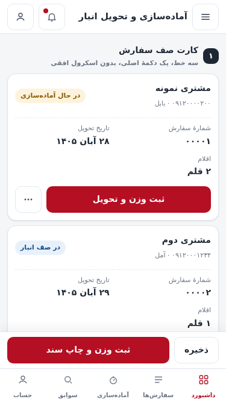
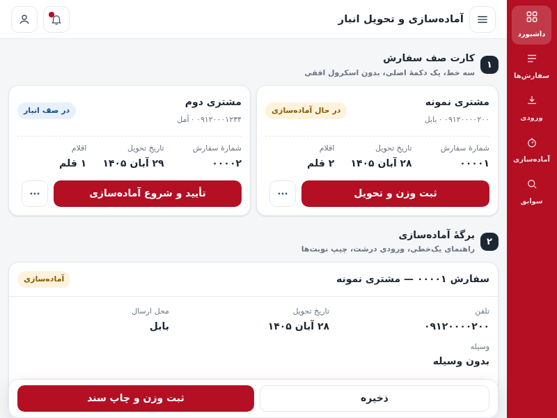
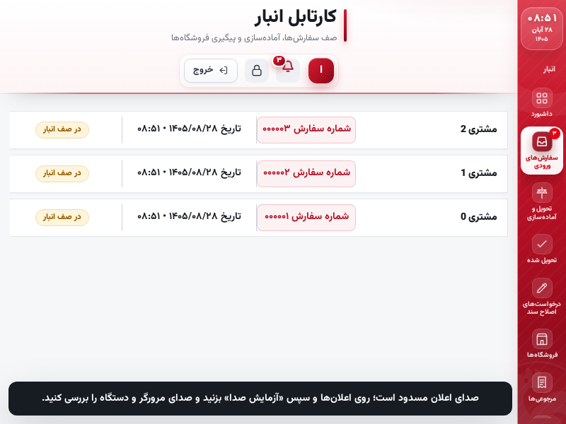
بعد — کارت سهخطی، یک دکمهٔ اصلی + «⋯»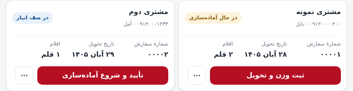
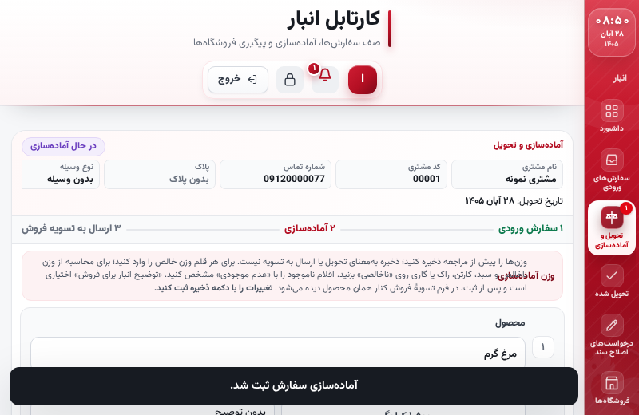
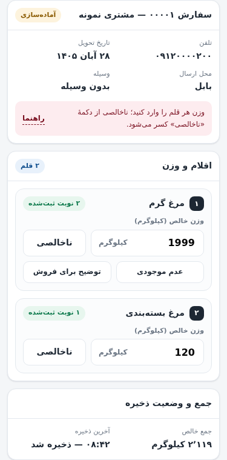
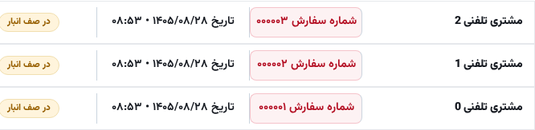
بعد — همان اطلاعات در کارت، همهچیز در کادر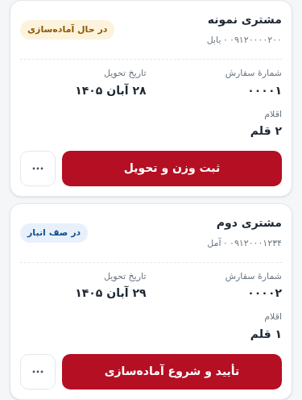
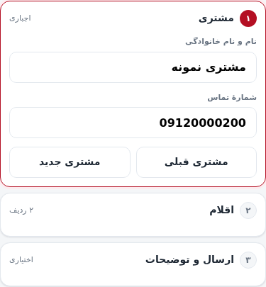
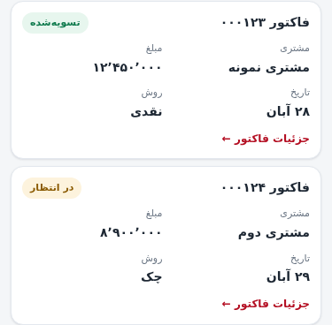
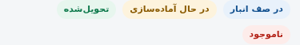
تصاویر «قبل» از اجرای واقعی نسخهٔ ۱.۱.۱۰ گرفته شدهاند؛ تصاویر «بعد» از فایل پیشنمایش docs/prototype/ui-compact.html.